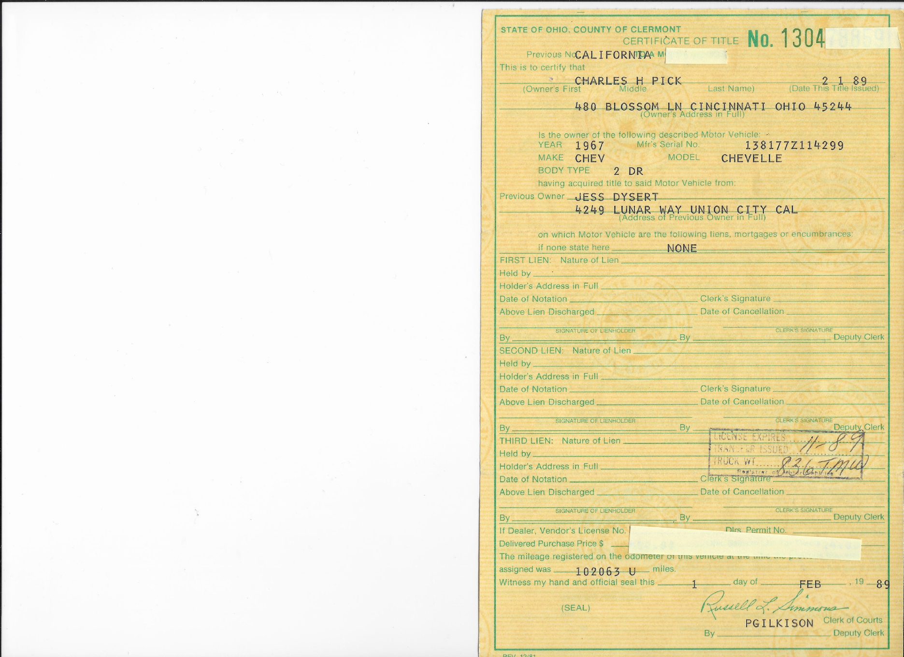

1967 Chevrolet Chevelle SS 396
California car, numbers-matching 396 and a remarkably solid body. Stored indoors for about 32 years with its old-school drag-racing setup still intact.

The Car — Click Any Box for More
This Chevelle has been kept close to the way it was found. The five boxes below separate the specifications, identification, preservation story, period drag equipment, and documented ownership history so a buyer can inspect the details without cluttering the main page.
1967 Chevelle SS 396396/350 HP • Turbo 400
1967 CHEVELLE SS 396
Factory Super Sport — VIN Begins 138
This powerhouse Chevelle is documented as a numbers-matching 1967 Chevrolet Chevelle SS 396/350 HP Sport Coupe, built at the Fremont, California assembly plant.
Key Specifications
- 396 cu. in. V8 — 350 HP
- Turbo 400 automatic transmission
- Factory Super Sport — 138 VIN
- 2-door Sport Coupe
- Fremont, California assembly
- California car before coming to Ohio in 1989
- 1989 documented mileage: 102,063
- Current mileage: approximately 102,125
- Only approximately 62 miles added since 1989
Numbers Matching / IDActual tags, stamps & component IDs
NUMBERS MATCHING / IDENTIFICATION
Documented identification — photographs of the actual car.
This Chevelle retains identifying numbers and component markings that can be inspected in the photographs below.
- VIN: 138177Z114299
- Fisher Body: 67-13817
- Assembly Plant: Fremont, California
- Engine: 396/350 HP
- Transmission: Turbo Hydra-Matic 400


California Car / No RustSolid body • 32-year garage storage
CALIFORNIA CAR — SOLID, RUST-FREE BODY
This Chevelle spent its early life in California before coming to Ohio in 1989. It was purchased as part of a collection of older cars and, rather than being continually restored or modified, was largely stored. It remained garage-kept for more than 32 years after it was last registered and licensed.
The result is an unusually solid 1967 Chevelle. The frame, floors and body are solid, with no rust problems found during inspection. The car has intentionally not been cosmetically restored for sale. What you see is an old-school Chevelle that still shows its age, history and period drag-racing character.
This is not a freshly restored car made to look old. It is an old car that has been preserved.
Brought Back to Life — Carefully
When the current owner inherited the collection following her husband's passing, this Chevelle had been sitting for decades and was not running. Because of the length of storage, it was not simply given a battery and fuel and immediately started.
The engine was carefully lubricated before attempting to turn or start it. The fuel and ignition systems were addressed as necessary, the carburetor was rebuilt with new seals, and the engine was gradually brought back to running condition. Current compression testing shows 150–170 PSI across all eight cylinders.
The car now starts, runs and idles with a strong cam sound, moves under its own power, and has been operated through its gears. It was first tested on the lift before receiving a short driveway test.
The car has not been road tested. The tires hold air but are approximately 32 years old and show age/dry rot. They are not represented as safe for highway use.
The Chevelle is presently configured as an old-school street/strip drag car. A buyer could preserve it as found, continue with the drag configuration, or return it toward street use. We have deliberately avoided changing its character so that decision belongs to its next owner.
Old-School Street/StripPeriod drag equipment & character
OLD-SCHOOL STREET/STRIP CHARACTER
This Chevelle wasn't recently modified to look like a period drag car. It was found with the equipment and modifications already in place after more than three decades of storage.
- B&M racing shifter with lockout
- Line-lock
- Holley 650 CFM Double Pumper
- Modified firewall associated with its earlier drag configuration
- Six-switch dash control panel, including ignition control
- Period racing-style wheels and tires
- Rear suspension/traction equipment
- Strong cammed big-block sound
- Evidence of earlier racing use, including the faint CRANE CAMS marking and passenger-window identification markings
The car is currently presented much as it was found rather than being converted into someone's modern interpretation of a vintage drag car.
Preserve the old-school drag configuration or return it toward street use — the next owner gets to make that decision.

Period Racing Rendition: An artistic rendition showing how this Chevelle may have appeared during its California racing years. The car's actual racing history is still being researched.
Documented History & MileageCalifornia → Ohio • 1989 title
DOCUMENTED OWNERSHIP & MILEAGE HISTORY
This Chevelle's history from California to Ohio is supported by its 1989 Ohio title.
- Previous Owner: Jess Dysert — Union City, California
- Ohio Owner: Charlie Pick — Cincinnati, Ohio (deceased)
- Current Owner: Wife of Charlie Pick
The February 1, 1989 Ohio title identifies the car as a 1967 Chevrolet Chevelle 2-door, VIN 138177Z114299, identifies Jess Dysert of Union City, California as the previous owner, records 102,063 miles, and shows Charles H. Pick of Cincinnati, Ohio as the Ohio owner.
Current mileage: approximately 102,125 miles. That is approximately 62 miles beyond the mileage documented when the Ohio title was issued in 1989.
After Charlie Pick's passing, the Chevelle remained with his wife as part of the collection he had assembled and preserved.
{kind=link}

Click the title to enlarge.
Photos


Hear It Run
Video demonstrates the Chevelle running and moving under its own power. It is not represented as a full road test.
Serious Inquiries Welcome
Located near Cincinnati, Ohio. Additional photographs, video and documentation are available for serious buyers.
Contact Joe Kresser — Call or Text: 513-752-3169